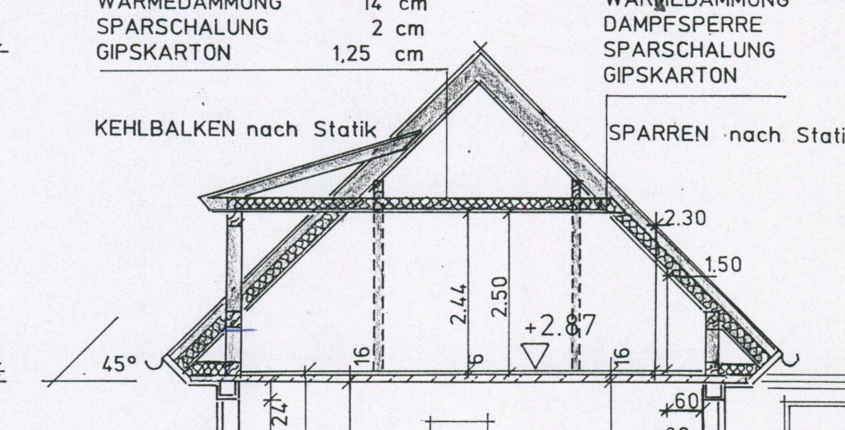
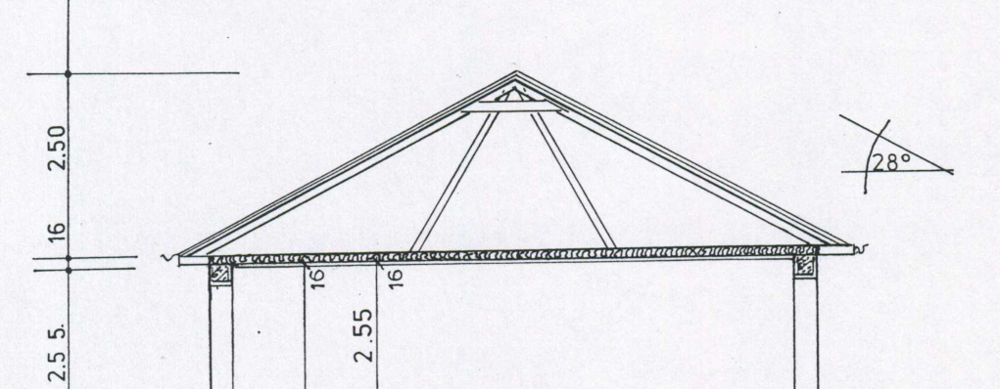
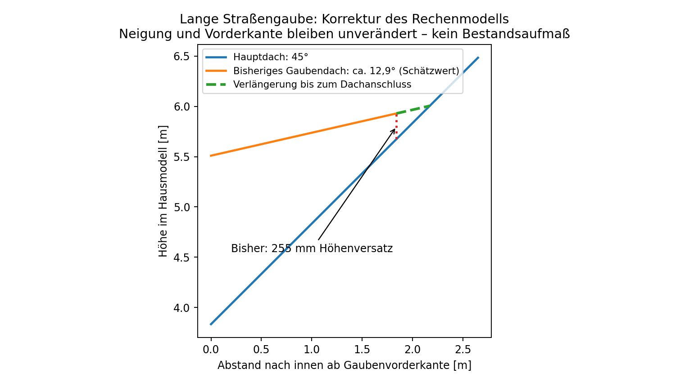
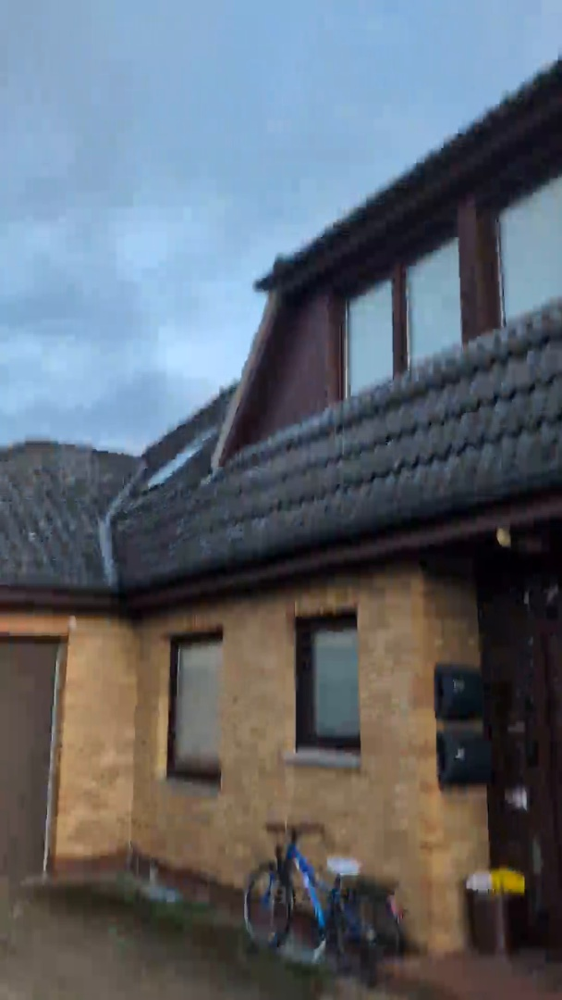
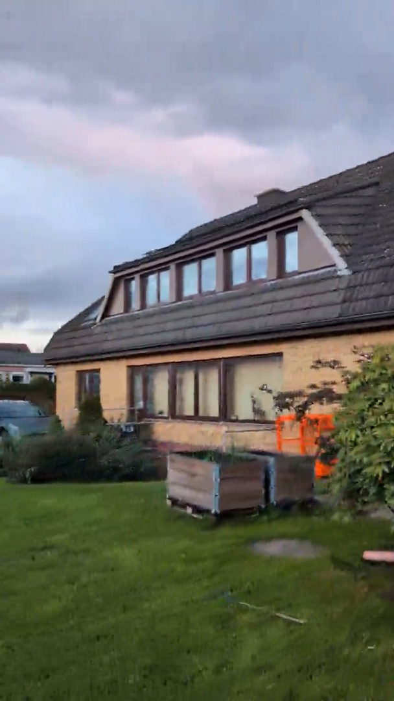

MAIN01-A01 · 09.10.2026 · Nur HausDachneigungen und Gaubenanschlüsse
45° Hauptdach, 28° ehemalige Schwimmhalle: beide bereits vorhanden. Die Korrektur betrifft die zu früh endenden Gaubendächer. Ihre tatsächlichen Neigungen bleiben unbestätigt.
Aktuelle Hausvorschau · PDF mit Belegen · Startanleitung
01 / Beschriftete Hauptwinkel
P13, Schnitt A–A: 45°. P18, Schnitt B–B: 28°. Diese zwei Zahlen gelten für unterschiedliche Hauptdachbereiche; nicht pauschal für alle Gauben, die Garage oder die Balkonhaube.

P13, Seite 1: 45° an der Hauptschräge; flachere Gaube ohne numerischen Winkel.
P18, Seite 1: 28° am Binderdach.
02 / Die tatsächliche Modellkorrektur
Alle drei Gaubendach-Hinterkanten treffen jetzt die vorhandene Hauptdachfläche. Vorderkante, Vorderhöhe, Breite, Fensterdaten und bisherige Schätzneigung bleiben unverändert. Die Neigungen werden nicht an einen ungeprüften Einheitswinkel angepasst.

| Modell-ID | Schätzneigung | Alter Höhenversatz | Verlängerung nach innen |
|---|
| GAUBE_WEST | 12.7° | 255 mm | ca. 329 mm |
| GAUBE_OST | 15.7° | 265 mm | ca. 369 mm |
| GAUBE_SUED | 12.9° | 255 mm | ca. 330 mm |
Die Zahlen sind aus MAIN01-Rechengeometrie abgeleitet, nicht am Haus gemessen. Künstliche Rückverschlusswände entfallen; Seitenwangen folgen derselben berechneten Naht. Dächer werden nicht zusätzlich übereinandergelegt.
03 / Videobelege und offene Winkel

00:36 – Eingangsgaube.
01:24 – lange Straßengaube.Die flachere Gaubenform ist sichtbar; numerische Winkel werden daraus nicht als vermessen ausgegeben. Insbesondere sind 28° am Schwimmhallendach kein Beleg für 28° an den Gauben. Der alte Garagenwinkel 35° bleibt unbestätigt. Schräge Frontwangen, Traufdetails und reale Anschlussaufbauten sind weiter unvollständig.
04 / Nachweise
87 Offline-/Simulationstests und CAD-Aufbau aller 1.418 Körper mit Open CASCADE. Kein eigener NX-/Parasolid-Lauf; keine hier erzeugten .prt-Dateien. Zehn alte Überschneidungspaare und zwei teilweise blockierte Innentüröffnungen bleiben offen. Keine neuen gezählten Paare, kein Tragwerksnachweis.
Vollständige numerische Winkel-/Nahtprüfung · Winkelregister · Testprotokoll
05 / Neue Arbeitsvariante
Das komplette Paket in einen neuen Ordner entpacken und 00_HAUS_MAIN01_ERZEUGEN.py aus diesem A01-Ordner starten. Interne MAIN01-Dateinamen bleiben, Patch und Baseline tragen MAIN01-A01. Das alte MAIN01 bleibt im bisherigen Ordner unberührt. Ein Neuaufbau übernimmt keine manuellen Änderungen aus alten Parts.